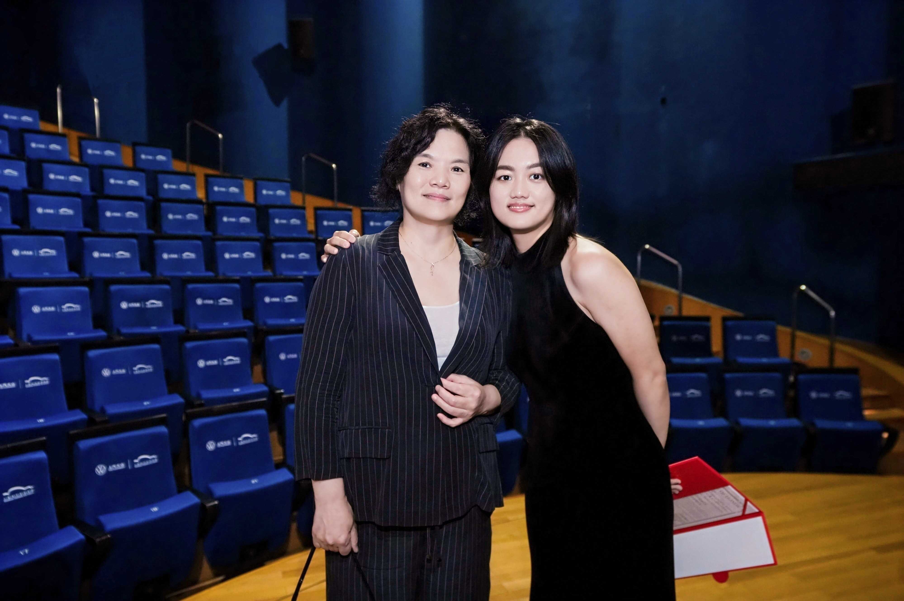

Pianist

About
Yuexuan (Joyce) Wang has performed as a solo pianist across China, the United States, Spain, and Italy. In addition to her solo appearances, she served as collaborative pianist for the Boston University Symphonic Chorus during the 2024–25 season. Since Fall 2025, she has taught group piano courses at Boston University for both music majors and non-music majors.
A prizewinner of the Steinway Piano Competition (China) and the Medici International Music Competition, Wang began studying piano under the guidance of her mother, a soprano and choral conductor specializing in Chinese folk music. She is currently pursuing the Doctor of Musical Arts degree at Boston University under the tutelage of pianist Boaz Sharon.
Read Full Biography